Erik
Retrato aprovado; idle aprovado visualmente, normalização pendente.

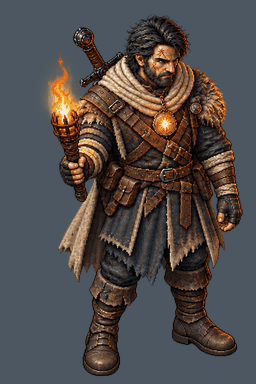
60 imagens VFX e quatro peças de Erik/Arlindo. Esta execução acrescentou 41 VFX + AO02. Novos VFX e AO02 são DRAFT. ER01, ER02 e AO01 foram aprovados visualmente. Nada foi admitido ao runtime nesta execução.
Verifique identidade, leitura em tamanho pequeno e progressão das seis fases. GIFs usam as imagens na ordem temporal, com redução uniforme para prévia: não corrigem pivô nem escala. Kayron/Nyrelia precisam de revisão do ciclo; Korrak tem leitura vertical de chamas; Sylas H402 tem cauda maior que o esperado. Todos os novos VFX vieram1254×1254 em vez1024×1024. Idles vieram2048×768 e precisam de grade/altura/pivô validados.
Retrato aprovado; idle aprovado visualmente, normalização pendente.

Retrato aprovado; idle DRAFT para revisão.

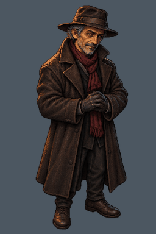
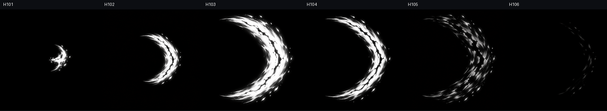
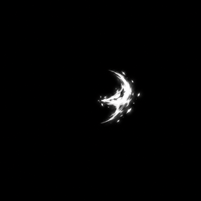
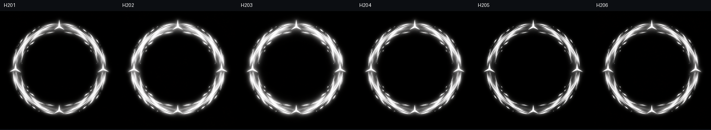
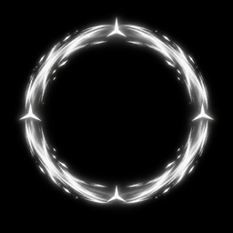
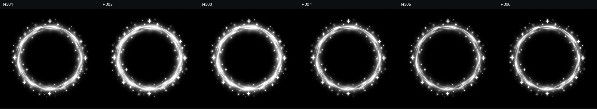
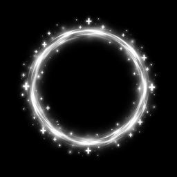
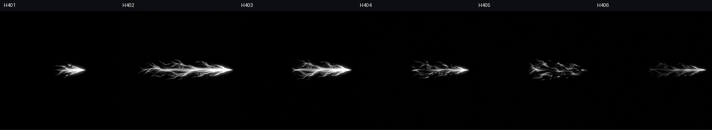
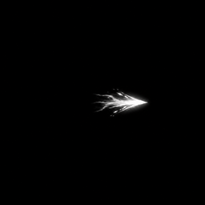
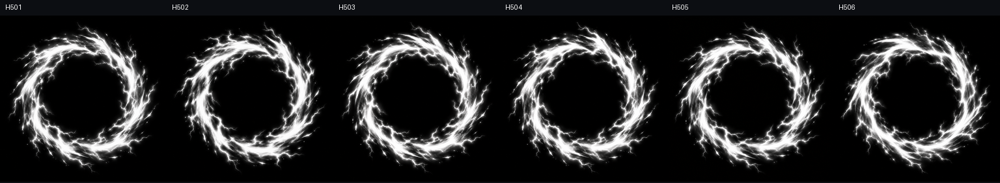
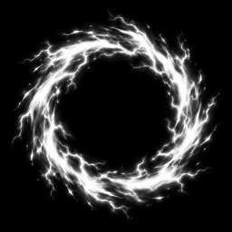
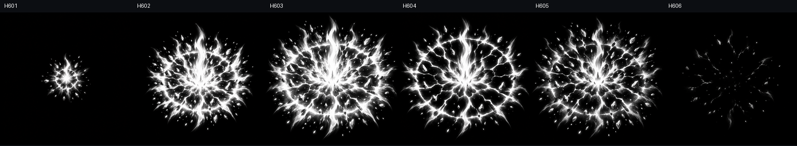
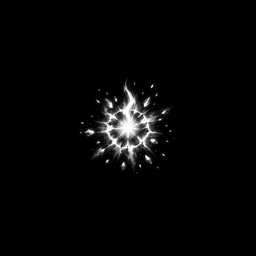
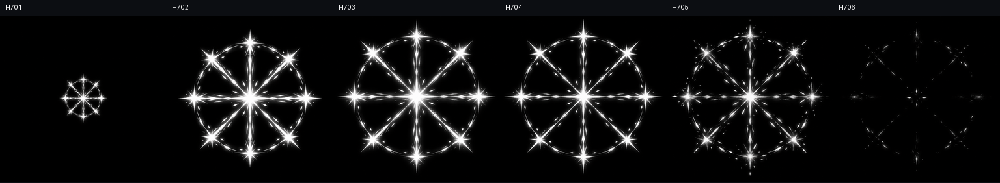
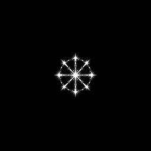
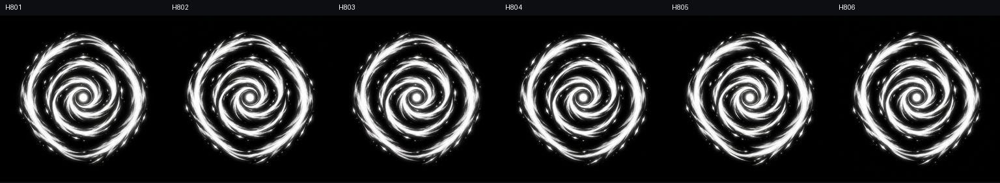
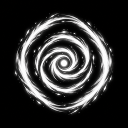
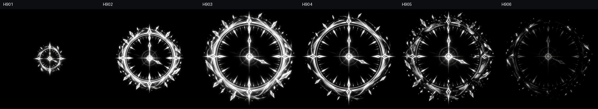
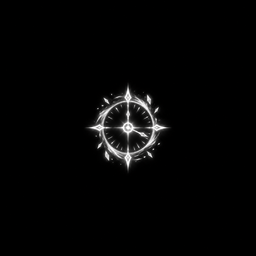
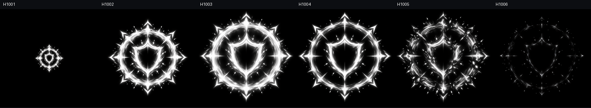
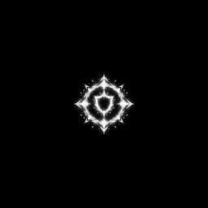